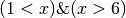

Operadores¶
Operadores relacionales y de igualdad¶
Utilizados entre dos valores numéricos devuelven una variable logical, true (1) o false (0). Los siguientes son operadores válidos:
| < | Menor que |
| <= | Menor o igual que |
| > | Mayor que |
| >= | Mayor o igual que |
| == | Igual a |
| ~= | No igual a |
Algunos ejemplos podrían ser:
2 < 3 % ans=1
2 > 3 % ans=0
2 >= 3 % ans=0
2 == 3 % ans=0
8 == (2^3) % ans=1
8 ~= 3 % ans=1
Hay que poner especial cuidado con el orden en que opera Octave cuando se concatenan varias operaciones seguidas en la misma línea. En general, cuando en una misma línea aparecen varios operadores relacionales, Octave opera la línea de izquierda a derecha.Veamos un ejemplo:
x = 6;
bool = 1 < x < 5
% El resultado será: bool = 1
x = 3
bool = 1 < x < 5
% El resultado será: bool = 1
En el ejemplo anterior, la expresión 1<x<5 siempre devolverá el resultado true, 1, independientemente del valor que tenga x La explicación es la siguiente: Octave opera la expresión 1<x<5 de izquierda a derecha; primero opera 1<x, que será 0 (false) o 1 (true) en función del valor de x. El resultado de esta operación lo compara con 6, dando siempre como resultado 1.
Para evitar errores en la operaciones, siempre es aconsejable hacer uso de los paréntesis. La expresión anterior se evaluaría correctamente escribiendo: 
Operadores lógicos¶
Operan entre dos variables logical y el resultado también es un valor logical. Los siguientes son los operadores que se pueden utilizar:
- OR Se utiliza el símbolo | (barra vertical). El resultado será cierto si es cierto el valor de al menos una de las dos variables logical que se operan
- AND Se utiliza el símbolo &. El resultado de la operación es cierto si son ciertas las dos variables logical que se operan.
- OR EXCLUSIVO Se utiliza la función xor(). En este caso el resultado es cierto si lo es una de las dos variables, pero no si son falsas o verdaderas las dos.
- NOT Este operador opera sobre una sola variable logical. El resultado será el contrario del valor de la variable.
x=3;
bool1 = (1<x) & (x<6)
% El resultado será: bool1 = 1
bool2 = xor((1<x),(x<6))
% El resultado será: bool1 = 0
x=7;
bool3 = (1<x) | (x<6)
% El resultado será: bool3 = 1
bool4 = ~(3<x)
% El resultado será: bool4 = 0
bool5 = xor((1<x),(x<6))
% El resultado será: bool5 = 1